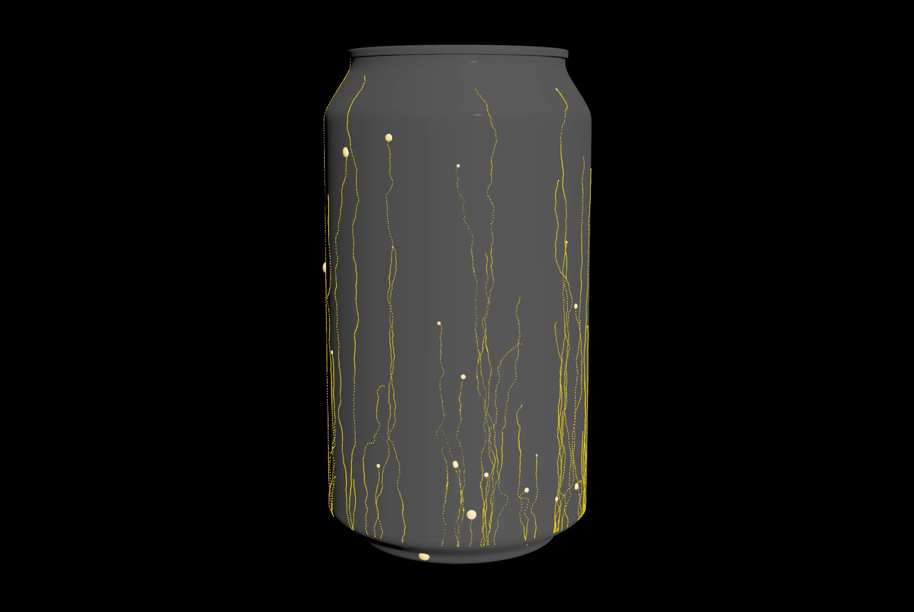
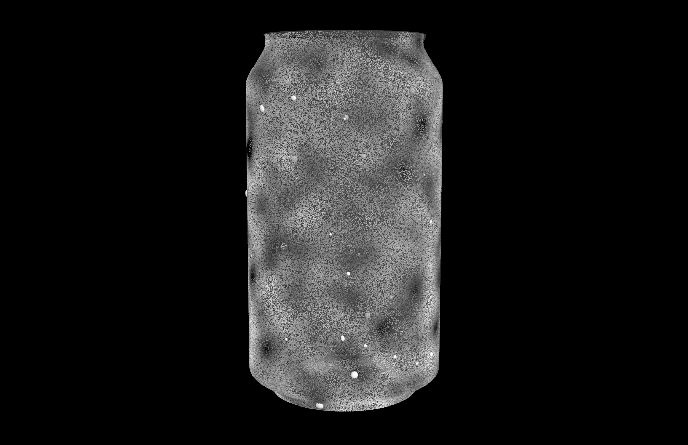
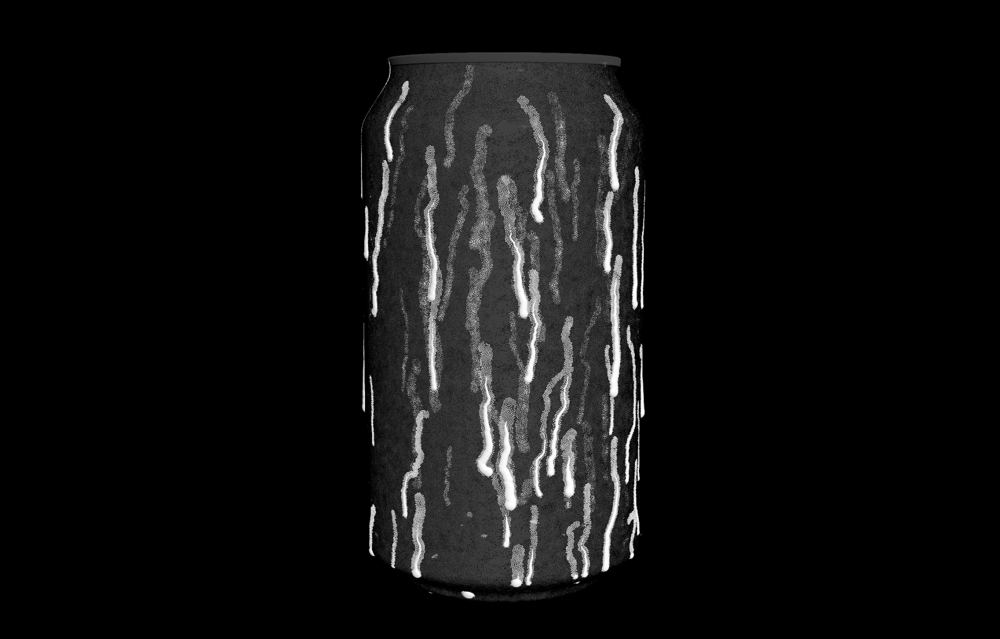
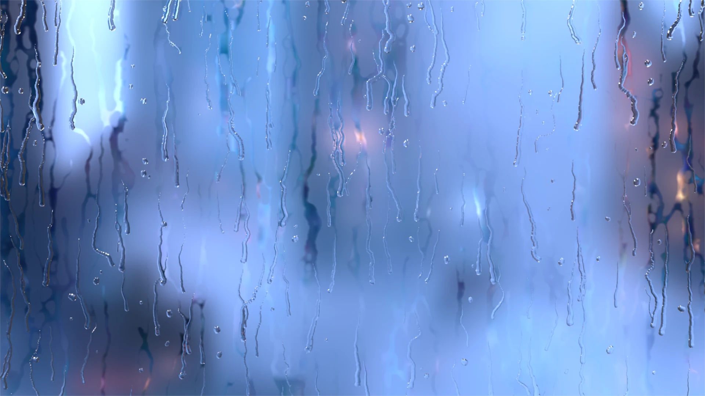

This SOP-based droplet tool for Houdini, built with extensive control over behavior, appearance, and sourcing in mind, is the result of exploring alternatives to particle fluid simulation tools. While this method is not a physical fluid simulation, it is significantly faster and offers more direct artistic design input. The HDA works with arbitrary input geometry and dynamically creates a wetmap texture per frame that can be fed into render engine shader inputs (such as the roughness channel of the glass material in the Octane render below). The tool was built entirely in Houdini using VEX and Python states for interactive point placement.
Note: Because this tool does not physically simulate fluid dynamics, droplet behavior relies on geometric surface rules rather than mass momentum. While stop parameters are provided, a physical fluid simulation remains best suited for drops that roll off edges into free space.
Sourcing and Point Generation
Droplets can be sourced either with a random procedural scatter of points across the surface, or by manually clicking on the geometry in the viewport using Houdini Python states. The frame when each drop begins moving can also be randomized within a specified range or manually keyframed.
Pathing, Friction Noise, and Wetmaps
The tool offers granular control over drop appearance (drop dimensions, radius randomization, trail length, and VDB meshing with static drops) as well as drop behavior (friction influence, gravity direction, and stopping conditions). Built-in visualizers assist in inspecting the underlying geometric attributes:


For the dynamic wetmap to bake properly, the input geometry requires UV coordinates. The wetness attribute is transferred into a COP2 network that evaluates UV space per frame. When configuring render materials, pointing the texture sampler to the internal wetmap COP network and setting texture evaluation to refresh each frame produces realistic dynamic trails:


Special thanks to the Toadstorm Nerdblog for their post on xyzdist() and primuv(), two indispensable VEX functions that powered this tool. Additional thanks to Peter Quint for his video tutorial on creating deforming wetmaps in Houdini.